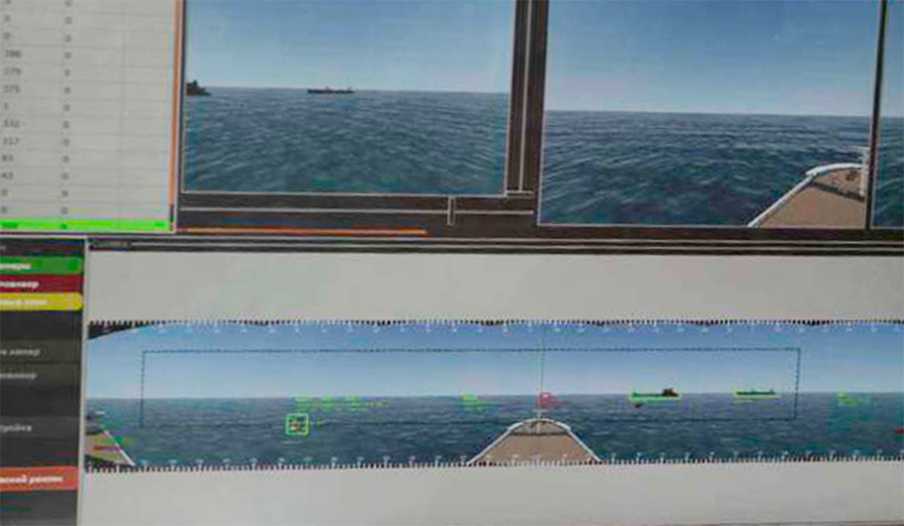

Технологии
- Функциональный подход
- Системная архитектура
- Автономная навигационная система
- Оптическая система анализа ситуационной обстановки
- Система координированного управления движением
- Расширение систем управления техническими средствами
- Пульт дистанционного управления
- Аппаратное обеспечение а-Нав
- Передача данных и кибербезопасность
- Мостиковый планшет
- Караванное управление
- Нормативное регулирование
Оптическая система
анализа ситуационной обстановки
ОСА предназначена для оптической (визуальной) оценки окружающей обстановки (обзорно-поисковая система, ОПС) и состояния судна (подсистема внутреннего наблюдения ПВН). Это искусственные глаза, наблюдающие непрерывно, без усталости и потери внимания, в темноте и сразу на 360 градусов вокруг судна.
ОПС предназначена для автоматического обнаружения и распознавания окружающих объектов, передачи информации о найденных объектах в машиночитаемом виде в ПОИ АНС, а обработанного видеоизображения на мостиковый планшет и ПДУ. Также ОПС записывает необработанные видеоданные всех видеокамер в СРД на борту судна. Таким образом выполняются конвенционные требования о постоянном визуальном наблюдении - не только в дистанционном, но и в автоматическом режиме управления. Безусловно, для автоматического режима управления требуется длительное обучение нейросети ОПС, в самом начале которого мы сейчас находимся - но мы считаем, что такой подход, с приоритетом автоматического распознавания, является наиболее перспективным. В частности, так мы действительно устраняем человеческий фактор в наблюдении и анализе, а не просто переносим его с борта судна в центр дистенционного управления.
ОПС также осуществляет передачу видеоданных на ПДУ. В зависимости от пропускной способности канала связи ОПС позволяет в автоматизированном режиме оптимизировать объем передаваемых данных за счет контролируемого снижения качества видеоизображения. Учитывая, что распознавание объектов зависит от индивидуальных свойств человека, клиент ОПС содержит конфигуратор, который позволяет изменять качество и разрешение передаваемого изображения – в зависимости от индивидуальных особенностей восприятия оператора ПДУ. Как отдельную = опцию ОПС предусматривает возможность построения виртуальных моделей вместо обычного видеоизображения, когда объединение сенсорных данных в виртуальной модели может обеспечить эквивалентную ситуационную осведомленность для оператора по сравнению с передаваемым реальным изображением.
ПВН предназначена для оптического (визуального) контроля и наблюдения за состоянием помещений, оборудования и грузов на судне. Передача оповещений и видеоинформации осуществляется ПВН в автоматическом и ручном режимах. В автоматическом режиме при возникновении заданной ситуации создается сигнал и пользователю на экран монитора автоматически выводится информация о событии и демонстрируется видео с соответствующей камеры, или данные датчиков (сенсоров). В ручном режиме пользователь имеет возможность произвольно выбрать видеокамеры для просмотра информации.